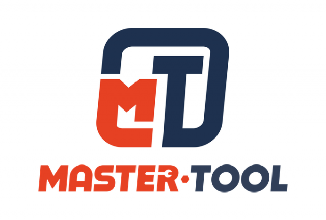

Материал компании

MITEX 2026 · Россия · Стенд 7С201
МАСТЕР-ЭКСПЕР
Карточка проверена 10 ноября 2026, 09:25 · Источник ↗ · Снимок оригинальной карточки ↗
О компании
Master-Tool — торговая марка ООО «Мастер-Экспер». С 2008 года снабжаем торговые компании, инструментальные и интернет-магазины, производства со своего склада в Санкт-Петербурге. Ассортимент: — метчики и плашки: метрическая резьба M/MF, дюймовая UNC, UNF, UNEF, UN и UNS (до 3"), трубная G (BSP), NPT, Rc, BSW, BSF, PG; круглые, шестигранные, регулируемые; левая резьба; — свёрла по металлу, наборы свёрл, комбинированные свёрла 90° и 180°, термосвёрла; — зенковки (4–5 режущих кромок, углы 60°, 75°, 90°, 120°); — резьбовые вставки для ремонта резьбы, наборы и инструмент для установки; — биты и насадки для шуруповёрта; — фаскосниматели и шаберы CP Gratex; — измерительный инструмент: электронные уровни DIGJY, поверочные линейки K-MET ШП. Официальный дистрибьютор VÖLKEL, RUKO, Bučovice Tools, K-MET, NKP, CP Gratex, SGS, DIGJY, BSKT и Ultra; собственные марки Master-Tool и H-Tools. Для торговых партнёров: более 10 000 товаров на складе в Санкт-Петербурге, отгрузка от 1 шт, скидка партнёра до 35% от розничной цены, прайсы и остатки по рассылке. На стенде 7С201 (павильон 2, зал 7) покажем образцы инструмента, которым можно дополнить ассортимент, и обсудим условия поставок для вашей компании. Назначить встречу, скачать прайсы и каталоги: https://master-tool.su/mitex2026/ Контакты: 8 (812) 366-84-57, 8 (800) 550-17-19, info@master-tool.su, zakaz@master-tool.su
Контакты
Сайт: https://master-tool.suE-mail: info@master-tool.suE-mail: zakaz@master-tool.suТелефон: +78123668457Телефон: +7(921)573-49-11social: https://t.me/+79319918172social: https://max.ru/u/f9LHodD0cOKyjC-nEClIiuZl8Bm9LdLR7iQaETm3TTIlPH4TiGbvm12ZbAk
Все контактные сведения из карточки
Контакты Офис и склад Телефон: +78123668457 E-mail: info@master-tool.su Адрес: 192283, Россия, Санкт-Петербург, Загребский бульвар, д. 33, пом. 5 Веб-сайт: https://master-tool.su E-mail: info@master-tool.su Телефон: +7(921)573-49-11
Все рубрики участника
Mitex - Рубрикатор
- 1. Электроинструмент и расходные материалы
- 5. Слесарный, монтажный, столярный, ручной инструмент
- 6. Инструменты и оборудование для обработки и резки металла, проволоки, труб, камня, стекла, керамики, пластмасс, дерева
- 7. Контрольно-измерительное оборудование и инструмент, лазерная техника
- 10. Алмазный, твердосплавный инструмент и оснастка
Зал
- Зал № 7
Участник выставки
- MITEX
Фотографии и изображения
Видео, каталоги и документы
Каталог продукции участника
Материалы каталога
Твердосплавный инструмент Коронки и полотна Измерительный инструмент Гратосниматели (фаскосниматели) Биты и насадки Восстановление резьбы Зенковки и цековки Термосверление Свёрла по металлу Резьбонарезной инструмент
Твердосплавный инструмент
Твердосплавный инструмент Твердосплавные свёрла, концевые и дисковые фрезы, резьбофрезы, борфрезы, коронки TCT и термосвёрла BSKT, RUKO, H-Tools, Master-Tool. Прайс, каталоги и наличие: https://master-tool.su/mitex2026/tverdosplavnyy-instrument/
Коронки и полотна
Коронки и полотна Коронки по металлу, корончатые свёрла Weldon, пробойники, ножовочные полотна, полотна для лобзиков и сабельных пил RUKO и ULTRA. Прайс, каталоги и наличие: https://master-tool.su/mitex2026/koronki-i-polotna/
Измерительный инструмент
Измерительный инструмент Штангенциркули, микрометры, нутромеры, индикаторы, концевые меры длины, угольники, линейки (в том числе поверочные линейки K-MET ШП), калибры, поверочные плиты K-MET; электронные уровни DIGJY. Прайс, каталоги и наличие: https://master-tool.su/mitex2026/izmeritelnyy-instrument/
Гратосниматели (фаскосниматели)
Гратосниматели (фаскосниматели) Инструмент для обработки кромки CP Gratex и RUKO: ручки и сменные лезвия 2,6 мм и 3,2 мм, адаптеры, шаберы, зенковки; в наборах и отдельно. Прайс, каталоги и наличие: https://master-tool.su/mitex2026/gratosnimateli/
Биты и насадки
Биты и насадки Биты Standard, Impact, Anti-Slip и Plus/Minus (SL/PH, SL/PZ) для автоматов, длина от 25 до 400 мм; PH, PZ, TORX, HEX, SL, Tri-Wing и другие. MicroBit 4 мм, двусторонние биты, магнитные держатели, переходники, наборы SGS, WIHA, WERA. Прайс, каталоги и наличие: https://master-tool.su/mitex2026/bity-i-nasadki/
Восстановление резьбы
Восстановление резьбы Проволочные резьбовые вставки (усиленные и самонарезные), наборы для ремонта резьбы M/MF, UNC, UNF, UN, G (BSP), BSW, BSF, метчики и инструмент для установки вставок, экстракторы. VÖLKEL, H-Tools. В наборах и штучно. Прайс, каталоги и наличие: https://master-tool.su/mitex2026/vosstanovlenie-rezby/
Зенковки и цековки
Зенковки и цековки Зенковки 60°, 75°, 90°, 120° (4–5 режущих кромок, есть с покрытием), цековки 90° и 180°, наборы Bučovice Tools, RUKO, H-Tools, Master-Tool. Прайс, каталоги и наличие: https://master-tool.su/mitex2026/zenkovki-i-tsekovki/
Термосверление
Термосверление Термосвёрла Master-Tool серий Standard, Hard и Pro и H-Tools: короткие и удлинённые, с буртиком и без. Патроны и цанги ER25. Прайс, каталоги и наличие: https://master-tool.su/mitex2026/termosverlenie/
Свёрла по металлу
Свёрла по металлу Спиральные свёрла с цилиндрическим и коническим хвостовиком, ступенчатые, центровочные и твердосплавные свёрла, наборы свёрл RUKO, H-Tools, Master-Tool, Bučovice Tools, BSKT. Комбинированные свёрла 90° и 180°: отверстие и фаска или посадка под головку винта за один проход. Прайс, каталоги и наличие: https://master-tool.su/mitex2026/sverla-po-metallu/
Резьбонарезной инструмент
Резьбонарезной инструмент Метчики, плашки, резьбофрезы, воротки и наборы VÖLKEL, Bučovice Tools, NKP, RUKO, BSKT, H-Tools. Метрическая M/MF, дюймовая UNC, UNF, UNEF, UN и UNS (до 3"), трубная G (BSP), NPT, Rc, а также BSW, BSF, PG; круглые, шестигранные и регулируемые плашки, левая резьба. Прайс, каталоги и наличие: https://master-tool.su/mitex2026/rezbonareznoy-instrument/
Новости из карточки
Новость участника
05.11.2026 15:55 Master-Tool (ООО Мастер-Экспер, Санкт-Петербург) приглашает на стенд 7С201 : павильон 2, зал 7, МВЦ Крокус Экспо, 10-13 ноября 2026. На стенде покажем образцы инструмента, которым можно дополнить ассортимент: метчики и плашки (в том числе дюймовые UN и UNS до 3 дюймов), зенковки, комбинированные свёрла и термосвёрла, резьбовые вставки, биты, фаскосниматели CP Gratex, электронные уровни DIGJY и поверочные линейки K-MET ШП. Обсудим условия поставок для вашей компании: скидка партнёра до 35%, отгрузка от 1 шт со склада в Санкт-Петербурге (более 10 000 товаров). Официальный дистрибьютор VÖLKEL, RUKO, Bučovice Tools, K-MET, NKP, CP Gratex, SGS, DIGJY, BSKT и Ultra; собственные марки Master-Tool и H-Tools. Назначить встречу, скачать прайсы и каталоги: master-tool.su/mitex2026 . Телефон: 8 (812) 366-84-57, e-mail: info@master-tool.su.